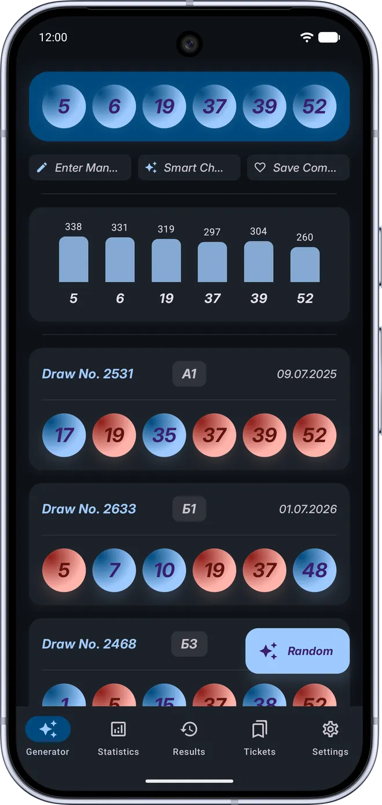
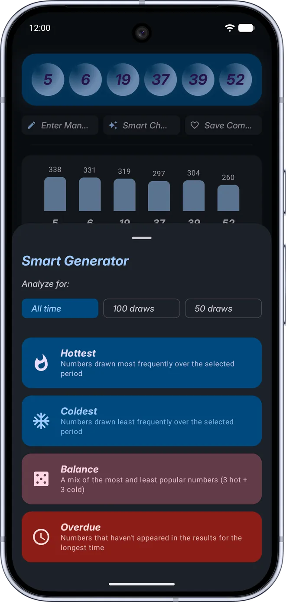
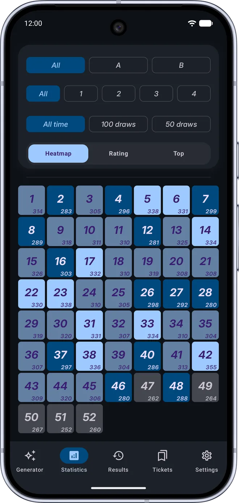
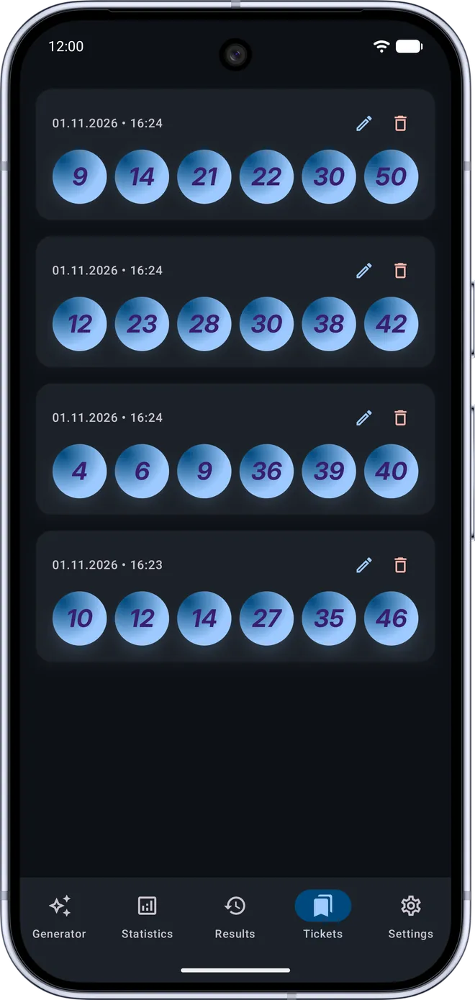

Draw history analysis instead of blind picks.
Smart combinations & draw statistics.
Explore a complete database of over 2,600 official Super Loto draws: generate random combinations or pick numbers using 4 mathematical strategies (Hottest, Coldest, Balance 3+3, Overdue), check your own tickets against past draws, and inspect detailed frequency stats for every ball.

Screenshot placeholder:assets/super-loto/screen-main-en.png
The “Super Loto Generator” app is an independent informational and statistical tool. It is not an official UNL (“Super Loto”) product and is in no way affiliated with the lottery organizers. Statistics are generated from open data (unl.ua) and provided strictly “as is”. The app does not accept bets, does not sell tickets, and does not predict winning numbers — all generated combinations are the result of chance or mathematical models and do not guarantee winnings. The decision to participate in the lottery is made independently by the user.
How Smart Generator Differs from Blind Terminal Quick Picks
A standard terminal quick pick gives you random numbers with zero historical context and no way to check how those numbers performed in past draws.
- • No statistical visibility: the terminal outputs numbers blindly without showing how often each ball has been drawn.
- • Zero selection strategies: you cannot filter numbers by hot, cold, balanced, or overdue trends across the last 50 or 100 draws.
- • No historical match check: you cannot see which past draws matched 2, 3, 4, 5, or all 6 numbers of your combination.
- • 2,600+ draws with auto-sync: the full draw archive is built right into the app, and new draws download automatically in the background on startup.
- • Random, Manual & Smart modes: generate random balls, enter your own 6 numbers, or apply 4 smart strategies across 50, 100 draws, or all-time history.
- • Instant bar chart & match list: every combination immediately displays a frequency bar chart and a list of all matching past draws with highlighted balls.
Five Dedicated Sections for Analysis, Generation & Saved Tickets
Smart Choice: 4 Strategies
Analyze all-time history, the last 100 draws, or 50 draws using 4 strategies: “Hottest” (most frequent), “Coldest” (least frequent), “Balance” (3 hot + 3 cold), or “Overdue” (longest absent numbers).
Check Your Own Ticket
Tap “Enter Manually”, select 6 numbers from the 1–52 grid, and instantly view a frequency bar chart for those balls along with every historical draw where 2 to 6 numbers matched.
Statistics: Heatmap, Rating & Top
Switch between the 52-ball “Heatmap”, the full “Rating” leaderboard with progress bars, and the “Top” dashboard (HOT Top-10 & COLD Top-10), filtered by lototron (A/B), ball set (1–4), and draw depth.
Saved Tickets with Notes
Save any combination in one tap, see the exact date and time it was saved, attach or edit custom notes (e.g., “For Sunday’s draw”), and manage your saved list anytime.
Results Archive & Offline Mode
Browse the dedicated “Results” tab featuring 2,600+ draws with draw dates, lototron (A/B) and ball set (1–4) badges. Everything works offline, while new draws sync automatically at app startup.
Themes, Palettes & Remove Ads
Customize the look with Light, Dark, or System themes, 4 color styles (Classic, Neon, Wealth, Joy), ascending ball sorting, and an optional one-time Premium purchase to permanently remove ads.
Clean Material Design 3 Interface
Smooth spring ball animations with haptic feedback, intuitive filters, and fast bottom navigation.

screen-generator-en.pngCombination Generator
Generator, Frequency Chart & Past Matches

screen-stats-en.pngDraw statistics
Heatmap, Rating & Top-10 Hot/Cold Balls

screen-saved-en.pngSaved tickets
Saved Combinations with Personal Notes
Frequently Asked Questions
Does this app guarantee a lottery win?
No. The app does not predict winning numbers, as every lottery draw is an independent random event. Super Loto Generator is an analytical reference tool that displays real historical frequencies across 2,600+ draws and helps you build combinations using mathematical strategies rather than blind guesswork.
Can I buy lottery tickets inside the app?
No. The app is a purely informational utility, does not offer gambling, and does not sell lottery tickets. You can generate, check, and save combinations to your device memory so you always have them handy.
Do the generator and statistics require an internet connection?
No. The archive of over 2,600 draws is built directly into the app, so the generator, manual ticket checker, heatmap, rating leaderboard, and draw results work 100% offline. An internet connection is only used to automatically fetch new draws on app launch and to verify Google Play purchases.
Try an Analytical Approach to Number Selection
Download Super Loto Generator for free from Google Play and check the history of your favorite combinations right now.